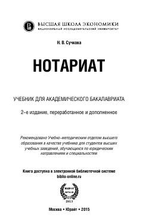

НRossiya notariat tizimi, qonunchiligi va notarial harakatlarni amalga oshirish bo'yicha o'quv qo'llanma.
Ushbu darslik Rossiya notariatining tashkil etilishi, faoliyati va notarial harakatlarni amalga oshirish tartibini qamrab oladi. Kitobda notarial hujjatlar namunalari, tariflar va qonunchilikdagi so'nggi o'zgarishlar tahlil qilingan.